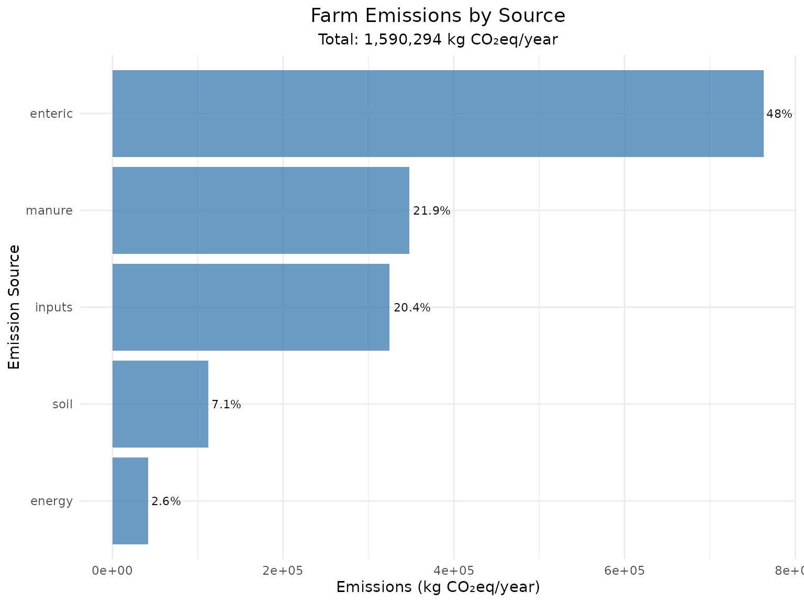

Single_Farm_Analysis_cowfootR
Source:vignettes/Single_Farm_Analysis_cowfootR.Rmd
Single_Farm_Analysis_cowfootR.Rmd`
Comprehensive Single Farm Carbon Footprint Analysis
This vignette demonstrates how to conduct a detailed carbon footprint assessment for an individual dairy farm using all available functions in cowfootR. We’ll work through a realistic example with comprehensive data collection and analysis.
Farm Profile: Estancia Las Flores
For this analysis, we’ll assess a medium-sized dairy farm in Uruguay with the following characteristics:
- Location: Temperate climate, well-drained soils
- System: Mixed grazing with supplementation
- Herd: 150 dairy cows plus young stock
- Area: 200 hectares total
- Production: 950,000 litres annually
Step 1: System Boundaries Definition
First, we define what emission sources to include in our assessment:
# Define comprehensive farm-gate boundaries
boundaries <- set_system_boundaries("farm_gate")
print(boundaries)
#> $scope
#> [1] "farm_gate"
#>
#> $include
#> [1] "enteric" "manure" "soil" "energy" "inputs"
# Alternative: cradle-to-farm-gate (includes upstream emissions)
boundaries_extended <- set_system_boundaries("cradle_to_farm_gate")
print(boundaries_extended)
#> $scope
#> [1] "cradle_to_farm_gate"
#>
#> $include
#> [1] "feed" "enteric" "manure" "soil" "energy" "inputs"
# Custom boundaries example
boundaries_partial <- set_system_boundaries(
scope = "partial",
include = c("enteric", "manure", "soil")
)
print(boundaries_partial)
#> $scope
#> [1] "partial"
#>
#> $include
#> [1] "enteric" "manure" "soil"For this analysis, we’ll use farm-gate boundaries as they represent the most common assessment scope.
Step 2: Detailed Farm Data Collection
Herd Composition and Management
# Detailed herd data
herd_data <- list(
# Main herd
dairy_cows_milking = 120,
dairy_cows_dry = 30,
# Young stock
heifers_total = 45,
calves_total = 35,
bulls_total = 3,
# Animal characteristics (kg live weight)
body_weight_cows = 580,
body_weight_heifers = 380,
body_weight_calves = 180,
body_weight_bulls = 750,
# Production parameters
milk_yield_per_cow = 6300, # kg/cow/year
annual_milk_litres = 950000,
fat_percent = 3.7,
protein_percent = 3.3,
milk_density = 1.032
)
print(herd_data)
#> $dairy_cows_milking
#> [1] 120
#>
#> $dairy_cows_dry
#> [1] 30
#>
#> $heifers_total
#> [1] 45
#>
#> $calves_total
#> [1] 35
#>
#> $bulls_total
#> [1] 3
#>
#> $body_weight_cows
#> [1] 580
#>
#> $body_weight_heifers
#> [1] 380
#>
#> $body_weight_calves
#> [1] 180
#>
#> $body_weight_bulls
#> [1] 750
#>
#> $milk_yield_per_cow
#> [1] 6300
#>
#> $annual_milk_litres
#> [1] 950000
#>
#> $fat_percent
#> [1] 3.7
#>
#> $protein_percent
#> [1] 3.3
#>
#> $milk_density
#> [1] 1.032Feed and Nutrition Management
# Feed inputs (all in kg dry matter per year)
feed_data <- list(
# Purchased feeds
concentrate_kg = 220000,
grain_dry_kg = 80000,
grain_wet_kg = 45000,
ration_kg = 60000,
byproducts_kg = 25000,
proteins_kg = 35000,
# Nutritional parameters
dry_matter_intake_cows = 19.5, # kg DM/cow/day
dry_matter_intake_heifers = 11.0,
dry_matter_intake_calves = 6.0,
dry_matter_intake_bulls = 14.0,
ym_percent = 6.3 # Methane conversion factor
)
print(feed_data)
#> $concentrate_kg
#> [1] 220000
#>
#> $grain_dry_kg
#> [1] 80000
#>
#> $grain_wet_kg
#> [1] 45000
#>
#> $ration_kg
#> [1] 60000
#>
#> $byproducts_kg
#> [1] 25000
#>
#> $proteins_kg
#> [1] 35000
#>
#> $dry_matter_intake_cows
#> [1] 19.5
#>
#> $dry_matter_intake_heifers
#> [1] 11
#>
#> $dry_matter_intake_calves
#> [1] 6
#>
#> $dry_matter_intake_bulls
#> [1] 14
#>
#> $ym_percent
#> [1] 6.3Land Use and Soil Management
# Detailed land use breakdown
land_data <- list(
# Total areas (hectares)
area_total = 200,
area_productive = 185,
area_fertilized = 160,
# Area breakdown
pasture_permanent = 140,
pasture_temporary = 30,
crops_feed = 12,
crops_cash = 3,
infrastructure = 8,
woodland = 7,
# Soil and climate
soil_type = "well_drained",
climate_zone = "temperate",
# Nitrogen inputs (kg N/year)
n_fertilizer_synthetic = 2400,
n_fertilizer_organic = 500,
n_excreta_pasture = 15000, # Estimated from grazing
n_crop_residues = 800
)
print(land_data)
#> $area_total
#> [1] 200
#>
#> $area_productive
#> [1] 185
#>
#> $area_fertilized
#> [1] 160
#>
#> $pasture_permanent
#> [1] 140
#>
#> $pasture_temporary
#> [1] 30
#>
#> $crops_feed
#> [1] 12
#>
#> $crops_cash
#> [1] 3
#>
#> $infrastructure
#> [1] 8
#>
#> $woodland
#> [1] 7
#>
#> $soil_type
#> [1] "well_drained"
#>
#> $climate_zone
#> [1] "temperate"
#>
#> $n_fertilizer_synthetic
#> [1] 2400
#>
#> $n_fertilizer_organic
#> [1] 500
#>
#> $n_excreta_pasture
#> [1] 15000
#>
#> $n_crop_residues
#> [1] 800Energy Consumption
# Energy use breakdown
energy_data <- list(
# Fuel consumption (litres/year)
diesel_litres = 12000,
petrol_litres = 1800,
# Other energy sources
lpg_kg = 600,
natural_gas_m3 = 0,
electricity_kwh = 48000,
# Country for electricity factors
country = "UY"
)
print(energy_data)
#> $diesel_litres
#> [1] 12000
#>
#> $petrol_litres
#> [1] 1800
#>
#> $lpg_kg
#> [1] 600
#>
#> $natural_gas_m3
#> [1] 0
#>
#> $electricity_kwh
#> [1] 48000
#>
#> $country
#> [1] "UY"Additional Inputs
# Other purchased inputs
other_inputs <- list(
# Materials (kg/year)
plastic_kg = 450,
# Transport (optional)
transport_km = 120, # Average transport distance for feeds
# Fertilizer types
fert_type = "mixed",
plastic_type = "mixed",
# Regional factors
region = "global" # Can be "EU", "US", "Brazil", etc.
)
print(other_inputs)
#> $plastic_kg
#> [1] 450
#>
#> $transport_km
#> [1] 120
#>
#> $fert_type
#> [1] "mixed"
#>
#> $plastic_type
#> [1] "mixed"
#>
#> $region
#> [1] "global"Step 3: Emission Calculations by Source
Now we calculate emissions from each source using the detailed farm data.
Enteric Fermentation Emissions
# Calculate enteric emissions for each animal category
enteric_cows <- calc_emissions_enteric(
n_animals = herd_data$dairy_cows_milking + herd_data$dairy_cows_dry,
cattle_category = "dairy_cows",
avg_milk_yield = herd_data$milk_yield_per_cow,
avg_body_weight = herd_data$body_weight_cows,
dry_matter_intake = feed_data$dry_matter_intake_cows,
ym_percent = feed_data$ym_percent,
tier = 2,
boundaries = boundaries
)
enteric_heifers <- calc_emissions_enteric(
n_animals = herd_data$heifers_total,
cattle_category = "heifers",
avg_body_weight = herd_data$body_weight_heifers,
dry_matter_intake = feed_data$dry_matter_intake_heifers,
ym_percent = feed_data$ym_percent,
tier = 2,
boundaries = boundaries
)
enteric_calves <- calc_emissions_enteric(
n_animals = herd_data$calves_total,
cattle_category = "calves",
avg_body_weight = herd_data$body_weight_calves,
dry_matter_intake = feed_data$dry_matter_intake_calves,
tier = 2,
boundaries = boundaries
)
enteric_bulls <- calc_emissions_enteric(
n_animals = herd_data$bulls_total,
cattle_category = "bulls",
avg_body_weight = herd_data$body_weight_bulls,
dry_matter_intake = feed_data$dry_matter_intake_bulls,
tier = 2,
boundaries = boundaries
)
# Summary of enteric emissions
enteric_summary <- data.frame(
Category = c("Dairy Cows", "Heifers", "Calves", "Bulls"),
Animals = c(150, herd_data$heifers_total, herd_data$calves_total, herd_data$bulls_total),
CH4_kg = c(enteric_cows$ch4_kg, enteric_heifers$ch4_kg,
enteric_calves$ch4_kg, enteric_bulls$ch4_kg),
CO2eq_kg = c(enteric_cows$co2eq_kg, enteric_heifers$co2eq_kg,
enteric_calves$co2eq_kg, enteric_bulls$co2eq_kg)
)
kable(enteric_summary, caption = "Enteric Emissions by Animal Category")| Category | Animals | CH4_kg | CO2eq_kg |
|---|---|---|---|
| Dairy Cows | 150 | 22299.26 | 606539.92 |
| Heifers | 45 | 3773.72 | 102645.22 |
| Calves | 35 | 1651.80 | 44928.88 |
| Bulls | 3 | 330.36 | 8985.78 |
# Total enteric emissions
total_enteric <- enteric_cows$co2eq_kg + enteric_heifers$co2eq_kg +
enteric_calves$co2eq_kg + enteric_bulls$co2eq_kgManure Management Emissions
# Calculate manure emissions for the entire herd
total_animals <- sum(herd_data$dairy_cows_milking, herd_data$dairy_cows_dry,
herd_data$heifers_total, herd_data$calves_total, herd_data$bulls_total)
manure_emissions <- calc_emissions_manure(
n_cows = total_animals,
manure_system = "pasture", # Extensive grazing system
tier = 2,
avg_body_weight = 500, # Weighted average
diet_digestibility = 0.67,
climate = "temperate",
include_indirect = TRUE,
boundaries = boundaries
)
print(manure_emissions)
#> $source
#> [1] "manure"
#>
#> $system
#> [1] "pasture"
#>
#> $tier
#> [1] 2
#>
#> $climate
#> [1] "temperate"
#>
#> $ch4_kg
#> [1] 4092.31
#>
#> $n2o_direct_kg
#> [1] 732.29
#>
#> $n2o_indirect_kg
#> [1] 134.56
#>
#> $n2o_total_kg
#> [1] 866.84
#>
#> $co2eq_kg
#> [1] 347959.2
#>
#> $emission_factors
#> $emission_factors$ef_ch4
#> [1] NA
#>
#> $emission_factors$ef_n2o_direct
#> [1] 0.02
#>
#> $emission_factors$gwp_ch4
#> [1] 27.2
#>
#> $emission_factors$gwp_n2o
#> [1] 273
#>
#>
#> $inputs
#> $inputs$n_cows
#> [1] 233
#>
#> $inputs$n_excreted
#> [1] 100
#>
#> $inputs$manure_system
#> [1] "pasture"
#>
#> $inputs$include_indirect
#> [1] TRUE
#>
#> $inputs$avg_body_weight
#> [1] 500
#>
#> $inputs$diet_digestibility
#> [1] 0.67
#>
#>
#> $methodology
#> [1] "IPCC Tier 2 (VS_B0_MCF calculation)"
#>
#> $standards
#> [1] "IPCC 2019 Refinement, IDF 2022"
#>
#> $date
#> [1] "2025-12-30"
#>
#> $per_cow
#> $per_cow$ch4_kg
#> [1] 17.5636
#>
#> $per_cow$n2o_kg
#> [1] 3.720357
#>
#> $per_cow$co2eq_kg
#> [1] 1493.387
#>
#>
#> $tier2_details
#> $tier2_details$vs_kg_per_day
#> [1] 26.6
#>
#> $tier2_details$b0_used
#> [1] 0.18
#>
#> $tier2_details$mcf_used
#> [1] 1.5Soil N2O Emissions
# Calculate soil emissions from all N sources
soil_emissions <- calc_emissions_soil(
n_fertilizer_synthetic = land_data$n_fertilizer_synthetic,
n_fertilizer_organic = land_data$n_fertilizer_organic,
n_excreta_pasture = land_data$n_excreta_pasture,
n_crop_residues = land_data$n_crop_residues,
area_ha = land_data$area_total,
soil_type = land_data$soil_type,
climate = land_data$climate_zone,
include_indirect = TRUE,
boundaries = boundaries
)
print(soil_emissions)
#> $source
#> [1] "soil"
#>
#> $soil_conditions
#> $soil_conditions$soil_type
#> [1] "well_drained"
#>
#> $soil_conditions$climate
#> [1] "temperate"
#>
#>
#> $nitrogen_inputs
#> $nitrogen_inputs$synthetic_fertilizer_kg_n
#> [1] 2400
#>
#> $nitrogen_inputs$organic_fertilizer_kg_n
#> [1] 500
#>
#> $nitrogen_inputs$excreta_pasture_kg_n
#> [1] 15000
#>
#> $nitrogen_inputs$crop_residues_kg_n
#> [1] 800
#>
#> $nitrogen_inputs$total_kg_n
#> [1] 18700
#>
#>
#> $emissions_breakdown
#> $emissions_breakdown$direct_n2o_kg
#> [1] 293.857
#>
#> $emissions_breakdown$indirect_volatilization_n2o_kg
#> [1] 52.486
#>
#> $emissions_breakdown$indirect_leaching_n2o_kg
#> [1] 66.118
#>
#> $emissions_breakdown$total_indirect_n2o_kg
#> [1] 118.604
#>
#> $emissions_breakdown$total_n2o_kg
#> [1] 412.461
#>
#>
#> $co2eq_kg
#> [1] 112601.8
#>
#> $emission_factors
#> $emission_factors$ef_direct
#> [1] 0.01
#>
#> $emission_factors$ef_volatilization
#> [1] 0.01
#>
#> $emission_factors$ef_leaching
#> [1] 0.0075
#>
#> $emission_factors$gwp_n2o
#> [1] 273
#>
#> $emission_factors$factors_source
#> [1] "IPCC-style defaults (temperate, well_drained)"
#>
#>
#> $methodology
#> [1] "Tier 1-style (direct + indirect)"
#>
#> $standards
#> [1] "IPCC 2019 Refinement, IDF 2022"
#>
#> $date
#> [1] "2025-12-30"
#>
#> $per_hectare_metrics
#> $per_hectare_metrics$n_input_kg_per_ha
#> [1] 93.5
#>
#> $per_hectare_metrics$n2o_kg_per_ha
#> [1] 2.062
#>
#> $per_hectare_metrics$co2eq_kg_per_ha
#> [1] 563.01
#>
#> $per_hectare_metrics$emission_intensity_kg_co2eq_per_kg_n
#> [1] 6.02
#>
#>
#> $source_contributions
#> $source_contributions$synthetic_fertilizer_pct
#> [1] 12.8
#>
#> $source_contributions$organic_fertilizer_pct
#> [1] 2.7
#>
#> $source_contributions$excreta_pasture_pct
#> [1] 80.2
#>
#> $source_contributions$crop_residues_pct
#> [1] 4.3
#>
#> $source_contributions$direct_emissions_pct
#> [1] 71.2
#>
#> $source_contributions$indirect_emissions_pct
#> [1] 28.8Energy-Related Emissions
# Calculate emissions from energy use
energy_emissions <- calc_emissions_energy(
diesel_l = energy_data$diesel_litres,
petrol_l = energy_data$petrol_litres,
lpg_kg = energy_data$lpg_kg,
natural_gas_m3 = energy_data$natural_gas_m3,
electricity_kwh = energy_data$electricity_kwh,
country = energy_data$country,
include_upstream = FALSE, # Only direct emissions
boundaries = boundaries
)
print(energy_emissions)
#> $source
#> [1] "energy"
#>
#> $fuel_emissions
#> $fuel_emissions$diesel_co2_kg
#> [1] 32040
#>
#> $fuel_emissions$petrol_co2_kg
#> [1] 4158
#>
#> $fuel_emissions$lpg_co2_kg
#> [1] 1800
#>
#> $fuel_emissions$natural_gas_co2_kg
#> [1] 0
#>
#> $fuel_emissions$electricity_co2_kg
#> [1] 3840
#>
#>
#> $direct_co2eq_kg
#> [1] 41838
#>
#> $upstream_co2eq_kg
#> [1] 0
#>
#> $co2eq_kg
#> [1] 41838
#>
#> $emission_factors
#> $emission_factors$diesel_kg_co2_per_l
#> [1] 2.67
#>
#> $emission_factors$petrol_kg_co2_per_l
#> [1] 2.31
#>
#> $emission_factors$lpg_kg_co2_per_kg
#> [1] 3
#>
#> $emission_factors$natural_gas_kg_co2_per_m3
#> [1] 2
#>
#> $emission_factors$electricity_kg_co2_per_kwh
#> [1] 0.08
#>
#> $emission_factors$electricity_country
#> [1] "UY"
#>
#>
#> $inputs
#> $inputs$diesel_l
#> [1] 12000
#>
#> $inputs$petrol_l
#> [1] 1800
#>
#> $inputs$lpg_kg
#> [1] 600
#>
#> $inputs$natural_gas_m3
#> [1] 0
#>
#> $inputs$electricity_kwh
#> [1] 48000
#>
#> $inputs$include_upstream
#> [1] FALSE
#>
#>
#> $methodology
#> [1] "IPCC 2019 emission factors"
#>
#> $standards
#> [1] "IPCC 2019 Refinement, IDF 2022"
#>
#> $date
#> [1] "2025-12-30"
#>
#> $energy_metrics
#> $energy_metrics$electricity_share_pct
#> [1] 9.2
#>
#> $energy_metrics$fossil_fuel_share_pct
#> [1] 90.8
#>
#> $energy_metrics$co2_intensity_kg_per_mwh
#> [1] 80Purchased Input Emissions
# Calculate emissions from purchased inputs
input_emissions <- calc_emissions_inputs(
conc_kg = feed_data$concentrate_kg,
fert_n_kg = land_data$n_fertilizer_synthetic,
plastic_kg = other_inputs$plastic_kg,
feed_grain_dry_kg = feed_data$grain_dry_kg,
feed_grain_wet_kg = feed_data$grain_wet_kg,
feed_ration_kg = feed_data$ration_kg,
feed_byproducts_kg = feed_data$byproducts_kg,
feed_proteins_kg = feed_data$proteins_kg,
region = other_inputs$region,
fert_type = other_inputs$fert_type,
plastic_type = other_inputs$plastic_type,
transport_km = other_inputs$transport_km,
boundaries = boundaries
)
print(input_emissions)
#> $source
#> [1] "inputs"
#>
#> $emissions_breakdown
#> $emissions_breakdown$concentrate_co2eq_kg
#> [1] 154000
#>
#> $emissions_breakdown$fertilizer_co2eq_kg
#> [1] 15840
#>
#> $emissions_breakdown$plastic_co2eq_kg
#> [1] 1125
#>
#> $emissions_breakdown$feeds_co2eq_kg
#> grain_dry grain_wet ration byproducts proteins corn soy
#> 32000 13500 36000 3750 63000 0 0
#> wheat
#> 0
#>
#> $emissions_breakdown$total_feeds_co2eq_kg
#> [1] 148250
#>
#> $emissions_breakdown$transport_adjustment_co2eq_kg
#> [1] 5580
#>
#>
#> $co2eq_kg
#> [1] 324795
#>
#> $total_co2eq_kg
#> [1] 324795
#>
#> $region
#> [1] "global"
#>
#> $emission_factors_used
#> $emission_factors_used$concentrate
#> $emission_factors_used$concentrate$value
#> [1] 0.7
#>
#> $emission_factors_used$concentrate$unit
#> [1] "kg CO2e/kg"
#>
#>
#> $emission_factors_used$fertilizer
#> $emission_factors_used$fertilizer$value
#> [1] 6.6
#>
#> $emission_factors_used$fertilizer$type
#> [1] "mixed"
#>
#> $emission_factors_used$fertilizer$unit
#> [1] "kg CO2e/kg N"
#>
#>
#> $emission_factors_used$plastic
#> $emission_factors_used$plastic$value
#> [1] 2.5
#>
#> $emission_factors_used$plastic$type
#> [1] "mixed"
#>
#> $emission_factors_used$plastic$unit
#> [1] "kg CO2e/kg"
#>
#>
#> $emission_factors_used$feeds
#> $emission_factors_used$feeds$grain_dry
#> $emission_factors_used$feeds$grain_dry$value
#> [1] 0.4
#>
#> $emission_factors_used$feeds$grain_dry$unit
#> [1] "kg CO2e/kg"
#>
#>
#> $emission_factors_used$feeds$grain_wet
#> $emission_factors_used$feeds$grain_wet$value
#> [1] 0.3
#>
#> $emission_factors_used$feeds$grain_wet$unit
#> [1] "kg CO2e/kg"
#>
#>
#> $emission_factors_used$feeds$ration
#> $emission_factors_used$feeds$ration$value
#> [1] 0.6
#>
#> $emission_factors_used$feeds$ration$unit
#> [1] "kg CO2e/kg"
#>
#>
#> $emission_factors_used$feeds$byproducts
#> $emission_factors_used$feeds$byproducts$value
#> [1] 0.15
#>
#> $emission_factors_used$feeds$byproducts$unit
#> [1] "kg CO2e/kg"
#>
#>
#> $emission_factors_used$feeds$proteins
#> $emission_factors_used$feeds$proteins$value
#> [1] 1.8
#>
#> $emission_factors_used$feeds$proteins$unit
#> [1] "kg CO2e/kg"
#>
#>
#> $emission_factors_used$feeds$corn
#> $emission_factors_used$feeds$corn$value
#> [1] 0.45
#>
#> $emission_factors_used$feeds$corn$unit
#> [1] "kg CO2e/kg"
#>
#>
#> $emission_factors_used$feeds$soy
#> $emission_factors_used$feeds$soy$value
#> [1] 2.1
#>
#> $emission_factors_used$feeds$soy$unit
#> [1] "kg CO2e/kg"
#>
#>
#> $emission_factors_used$feeds$wheat
#> $emission_factors_used$feeds$wheat$value
#> [1] 0.52
#>
#> $emission_factors_used$feeds$wheat$unit
#> [1] "kg CO2e/kg"
#>
#>
#>
#> $emission_factors_used$region_source
#> [1] "global"
#>
#> $emission_factors_used$transport_km
#> [1] 120
#>
#>
#> $inputs_summary
#> $inputs_summary$concentrate_kg
#> [1] 220000
#>
#> $inputs_summary$fertilizer_n_kg
#> [1] 2400
#>
#> $inputs_summary$plastic_kg
#> [1] 450
#>
#> $inputs_summary$total_feeds_kg
#> [1] 245000
#>
#> $inputs_summary$feed_breakdown_kg
#> $inputs_summary$feed_breakdown_kg$grain_dry
#> [1] 80000
#>
#> $inputs_summary$feed_breakdown_kg$grain_wet
#> [1] 45000
#>
#> $inputs_summary$feed_breakdown_kg$ration
#> [1] 60000
#>
#> $inputs_summary$feed_breakdown_kg$byproducts
#> [1] 25000
#>
#> $inputs_summary$feed_breakdown_kg$proteins
#> [1] 35000
#>
#> $inputs_summary$feed_breakdown_kg$corn
#> [1] 0
#>
#> $inputs_summary$feed_breakdown_kg$soy
#> [1] 0
#>
#> $inputs_summary$feed_breakdown_kg$wheat
#> [1] 0
#>
#>
#>
#> $contribution_analysis
#> $contribution_analysis$concentrate_pct
#> [1] 47.4
#>
#> $contribution_analysis$fertilizer_pct
#> [1] 4.9
#>
#> $contribution_analysis$plastic_pct
#> [1] 0.3
#>
#> $contribution_analysis$feeds_pct
#> [1] 45.6
#>
#> $contribution_analysis$transport_pct
#> [1] 1.7
#>
#>
#> $uncertainty
#> NULL
#>
#> $methodology
#> [1] "Regional emission factors with optional uncertainty analysis"
#>
#> $standards
#> [1] "IDF 2022; generic LCI sources"
#>
#> $date
#> [1] "2025-12-30"Step 4: Total Emissions and Analysis
Aggregate All Emission Sources
# Create combined enteric emissions object
enteric_combined <- list(
source = "enteric",
co2eq_kg = total_enteric
)
# Calculate total emissions
total_emissions <- calc_total_emissions(
enteric_combined,
manure_emissions,
soil_emissions,
energy_emissions,
input_emissions
)
total_emissions
#> Carbon Footprint - Total Emissions
#> ==================================
#> Total CO2eq: 1590294 kg
#> Number of sources: 5
#>
#> Breakdown by source:
#> energy : 41838 kg CO2eq
#> enteric : 763099.8 kg CO2eq
#> inputs : 324795 kg CO2eq
#> manure : 347959.2 kg CO2eq
#> soil : 112601.8 kg CO2eq
#>
#> Calculated on: 2025-12-30Visualize Emission Sources
# Create detailed breakdown
emission_breakdown <- data.frame(
Source = names(total_emissions$breakdown),
Emissions = as.numeric(total_emissions$breakdown),
Percentage = round(as.numeric(total_emissions$breakdown) /
total_emissions$total_co2eq * 100, 1)
)
# Create bar chart
ggplot(emission_breakdown, aes(x = reorder(Source, Emissions), y = Emissions)) +
geom_col(fill = "steelblue", alpha = 0.8) +
geom_text(aes(label = paste0(Percentage, "%")),
hjust = -0.1, size = 3) +
coord_flip() +
labs(title = "Farm Emissions by Source",
subtitle = paste("Total:", format(round(total_emissions$total_co2eq),
big.mark = ","), "kg CO₂eq/year"),
x = "Emission Source",
y = "Emissions (kg CO₂eq/year)") +
theme_minimal() +
theme(plot.title = element_text(size = 14, hjust = 0.5),
plot.subtitle = element_text(hjust = 0.5))
Step 5: Intensity Calculations
Milk Intensity
# Calculate emissions per kg of FPCM
milk_intensity <- calc_intensity_litre(
total_emissions = total_emissions,
milk_litres = herd_data$annual_milk_litres,
fat = herd_data$fat_percent,
protein = herd_data$protein_percent,
milk_density = herd_data$milk_density
)
print(milk_intensity)
#> Carbon Footprint Intensity
#> ==========================
#> Intensity: 1.684 kg CO2eq/kg FPCM
#>
#> Production data:
#> Raw milk (L): 950,000 L
#> Raw milk (kg): 980,400 kg
#> FPCM (kg): 944,223 kg
#> Fat content: 3.7 %
#> Protein content: 3.3 %
#>
#> Total emissions: 1,590,294 kg CO2eq
#> Calculated on: 2025-12-30Area Intensity
# Calculate emissions per hectare
area_breakdown <- list(
pasture_permanent = land_data$pasture_permanent,
pasture_temporary = land_data$pasture_temporary,
crops_feed = land_data$crops_feed,
crops_cash = land_data$crops_cash,
infrastructure = land_data$infrastructure,
woodland = land_data$woodland
)
area_intensity <- calc_intensity_area(
total_emissions = total_emissions,
area_total_ha = land_data$area_total,
area_productive_ha = land_data$area_productive,
area_breakdown = area_breakdown,
validate_area_sum = TRUE
)
print(area_intensity)
#> Carbon Footprint Area Intensity
#> ===============================
#> Intensity (total area): 7951.47 kg CO2eq/ha
#> Intensity (productive area): 8596.18 kg CO2eq/ha
#>
#> Area summary:
#> Total area: 200 ha
#> Productive area: 185 ha
#> Land use efficiency: 92.5%
#>
#> Land use breakdown:
#> pasture permanent: 140.0 ha (70.0%) -> 1113206 kg CO2eq
#> pasture temporary: 30.0 ha (15.0%) -> 238544 kg CO2eq
#> crops feed: 12.0 ha (6.0%) -> 95418 kg CO2eq
#> crops cash: 3.0 ha (1.5%) -> 23854 kg CO2eq
#> infrastructure: 8.0 ha (4.0%) -> 63612 kg CO2eq
#> woodland: 7.0 ha (3.5%) -> 55660 kg CO2eq
#>
#> Total emissions: 1,590,294 kg CO2eq
#> Calculated on: 2025-12-30Benchmarking Against Regional Standards
# Benchmark against Uruguayan standards
area_benchmark <- benchmark_area_intensity(
cf_area_intensity = area_intensity,
region = "uruguay"
)
print(area_benchmark$benchmarking)
#> $region
#> [1] "uruguay"
#>
#> $benchmark_mean
#> [1] 6000
#>
#> $benchmark_range
#> [1] 5000 7000
#>
#> $benchmark_source
#> [1] "Placeholder"
#>
#> $vs_mean_percent
#> [1] 43.3
#>
#> $performance_category
#> [1] "Above average (above typical range)"Step 6: Detailed Results Analysis
Per-Animal Emissions
# Calculate emissions per animal category
per_animal_analysis <- data.frame(
Category = c("Dairy Cows", "All Animals"),
Number = c(150, total_animals),
Total_Emissions = c(total_emissions$total_co2eq, total_emissions$total_co2eq),
Emissions_per_Head = c(
total_emissions$total_co2eq / 150,
total_emissions$total_co2eq / total_animals
),
Milk_per_Head = c(herd_data$annual_milk_litres / 150, NA)
)
kable(per_animal_analysis,
digits = 0,
caption = "Per-Animal Emission Analysis")| Category | Number | Total_Emissions | Emissions_per_Head | Milk_per_Head |
|---|---|---|---|---|
| Dairy Cows | 150 | 1590294 | 10602 | 6333 |
| All Animals | 233 | 1590294 | 6825 | NA |
Feed Efficiency Analysis
# Calculate feed-related metrics
total_purchased_feed <- sum(
feed_data$concentrate_kg,
feed_data$grain_dry_kg,
feed_data$grain_wet_kg,
feed_data$ration_kg,
feed_data$byproducts_kg,
feed_data$proteins_kg
)
feed_analysis <- data.frame(
Metric = c("Total Feed Purchases", "Feed Emissions", "Feed CO2eq per kg DM",
"Feed Efficiency", "Milk from Feed"),
Value = c(
total_purchased_feed,
input_emissions$total_co2eq_kg,
input_emissions$total_co2eq_kg / total_purchased_feed,
herd_data$annual_milk_litres / total_purchased_feed,
herd_data$annual_milk_litres
),
Unit = c("kg DM", "kg CO₂eq", "kg CO₂eq/kg DM", "L milk/kg DM", "L")
)
kable(feed_analysis, digits = 2, caption = "Feed Efficiency Analysis")| Metric | Value | Unit |
|---|---|---|
| Total Feed Purchases | 465000.00 | kg DM |
| Feed Emissions | 324795.00 | kg CO₂eq |
| Feed CO2eq per kg DM | 0.70 | kg CO₂eq/kg DM |
| Feed Efficiency | 2.04 | L milk/kg DM |
| Milk from Feed | 950000.00 | L |
Step 7: Mitigation Scenario Analysis
Let’s analyze potential mitigation strategies:
Scenario 1: Improved Feed Efficiency
# Scenario: 10% reduction in concentrate use with maintained production
improved_inputs <- calc_emissions_inputs(
conc_kg = feed_data$concentrate_kg * 0.9, # 10% reduction
fert_n_kg = land_data$n_fertilizer_synthetic,
plastic_kg = other_inputs$plastic_kg,
feed_grain_dry_kg = feed_data$grain_dry_kg,
feed_grain_wet_kg = feed_data$grain_wet_kg,
feed_ration_kg = feed_data$ration_kg,
feed_byproducts_kg = feed_data$byproducts_kg,
feed_proteins_kg = feed_data$proteins_kg,
region = other_inputs$region,
fert_type = other_inputs$fert_type,
plastic_type = other_inputs$plastic_type,
transport_km = other_inputs$transport_km,
boundaries = boundaries
)
# Calculate total for improved scenario
total_improved <- calc_total_emissions(
enteric_combined,
manure_emissions,
soil_emissions,
energy_emissions,
improved_inputs
)
# Compare scenarios
scenario_comparison <- data.frame(
Scenario = c("Baseline", "Improved Feed Efficiency"),
Total_Emissions = c(total_emissions$total_co2eq, total_improved$total_co2eq),
Input_Emissions = c(input_emissions$total_co2eq_kg, improved_inputs$total_co2eq_kg),
Reduction_kg = c(0, total_emissions$total_co2eq - total_improved$total_co2eq),
Reduction_percent = c(0, round((total_emissions$total_co2eq - total_improved$total_co2eq) /
total_emissions$total_co2eq * 100, 1))
)
kable(scenario_comparison, caption = "Mitigation Scenario Analysis")| Scenario | Total_Emissions | Input_Emissions | Reduction_kg | Reduction_percent |
|---|---|---|---|---|
| Baseline | 1590294 | 324795 | 0 | 0 |
| Improved Feed Efficiency | 1574630 | 309131 | 15664 | 1 |
Scenario 2: Enhanced Manure Management
# Scenario: Switch from pasture to anaerobic digester
improved_manure <- calc_emissions_manure(
n_cows = total_animals,
manure_system = "anaerobic_digester",
tier = 2,
avg_body_weight = 500,
diet_digestibility = 0.67,
climate = "temperate",
retention_days = 45,
system_temperature = 35,
include_indirect = TRUE,
boundaries = boundaries
)
# Calculate total with improved manure management
total_improved_manure <- calc_total_emissions(
enteric_combined,
improved_manure,
soil_emissions,
energy_emissions,
input_emissions
)
manure_comparison <- data.frame(
System = c("Pasture", "Anaerobic Digester"),
CH4_kg = c(manure_emissions$ch4_kg, improved_manure$ch4_kg),
N2O_kg = c(manure_emissions$n2o_total_kg, improved_manure$n2o_total_kg),
Total_CO2eq = c(manure_emissions$co2eq_kg, improved_manure$co2eq_kg),
Reduction_kg = c(0, manure_emissions$co2eq_kg - improved_manure$co2eq_kg)
)
kable(manure_comparison, caption = "Manure Management Comparison")| System | CH4_kg | N2O_kg | Total_CO2eq | Reduction_kg |
|---|---|---|---|---|
| Pasture | 4092.31 | 866.84 | 347959.2 | 0 |
| Anaerobic Digester | 245538.86 | 866.84 | 6915305.2 | -6567346 |
Step 8: Comprehensive Results Visualization
Multi-Source Emissions Chart
# Prepare data for comprehensive visualization
detailed_emissions <- data.frame(
Source = c("Enteric - Cows", "Enteric - Young Stock", "Manure Management",
"Soil N2O", "Energy Use", "Purchased Inputs"),
Emissions = c(
enteric_cows$co2eq_kg,
enteric_heifers$co2eq_kg + enteric_calves$co2eq_kg + enteric_bulls$co2eq_kg,
manure_emissions$co2eq_kg,
soil_emissions$co2eq_kg,
energy_emissions$co2eq_kg,
input_emissions$total_co2eq_kg
),
Category = c("Enteric", "Enteric", "Manure", "Soil", "Energy", "Inputs")
)
# Create stacked bar chart
ggplot(detailed_emissions, aes(x = "Farm Emissions", y = Emissions, fill = Source)) +
geom_col() +
geom_text(aes(label = ifelse(Emissions > 2000,
paste0(round(Emissions/1000, 1), "k"), "")),
position = position_stack(vjust = 0.5),
color = "white", fontweight = "bold") +
labs(title = "Estancia Las Flores - Carbon Footprint Breakdown",
subtitle = paste("Total:", format(round(total_emissions$total_co2eq),
big.mark = ","), "kg CO₂eq/year"),
x = "",
y = "Emissions (kg CO₂eq/year)") +
theme_minimal() +
theme(plot.title = element_text(size = 14, hjust = 0.5),
plot.subtitle = element_text(hjust = 0.5),
axis.text.x = element_blank(),
legend.position = "right") +
scale_fill_brewer(type = "qual", palette = "Set2")Intensity Metrics Dashboard
# Calculate key performance indicators
kpi_summary <- data.frame(
Metric = c(
"Milk Intensity (kg CO₂eq/kg FPCM)",
"Area Intensity - Total (kg CO₂eq/ha)",
"Area Intensity - Productive (kg CO₂eq/ha)",
"Land Use Efficiency (%)",
"Milk Yield (L/cow/year)",
"Stocking Rate (cows/ha)"
),
Value = c(
round(milk_intensity$intensity_co2eq_per_kg_fpcm, 3),
round(area_intensity$intensity_per_total_ha, 0),
round(area_intensity$intensity_per_productive_ha, 0),
round(area_intensity$land_use_efficiency * 100, 1),
round(herd_data$annual_milk_litres / 150, 0),
round(150 / land_data$area_total, 2)
),
Benchmark = c("< 1.2", "< 8,000", "< 8,500", "> 85%", "> 6,000", "0.5-1.2"),
Performance = c(
ifelse(milk_intensity$intensity_co2eq_per_kg_fpcm < 1.2, "Good", "Needs Improvement"),
ifelse(area_intensity$intensity_per_total_ha < 8000, "Good", "Needs Improvement"),
ifelse(area_intensity$intensity_per_productive_ha < 8500, "Good", "Needs Improvement"),
ifelse(area_intensity$land_use_efficiency > 0.85, "Good", "Needs Improvement"),
ifelse(herd_data$annual_milk_litres / 150 > 6000, "Good", "Needs Improvement"),
"Within Range"
)
)
kable(kpi_summary, caption = "Key Performance Indicators")| Metric | Value | Benchmark | Performance |
|---|---|---|---|
| Milk Intensity (kg CO₂eq/kg FPCM) | 1.684 | < 1.2 | Needs Improvement |
| Area Intensity - Total (kg CO₂eq/ha) | 7951.000 | < 8,000 | Good |
| Area Intensity - Productive (kg CO₂eq/ha) | 8596.000 | < 8,500 | Needs Improvement |
| Land Use Efficiency (%) | 92.500 | > 85% | Good |
| Milk Yield (L/cow/year) | 6333.000 | > 6,000 | Good |
| Stocking Rate (cows/ha) | 0.750 | 0.5-1.2 | Within Range |
Conclusion
This detailed single-farm analysis demonstrates the comprehensive capabilities of cowfootR for dairy farm carbon footprint assessment. The modular approach allows for detailed investigation of each emission source while maintaining consistency with international standards.
Key takeaways from this analysis:
- Systematic approach: Following the step-by-step methodology ensures completeness and accuracy
- Data quality matters: More detailed farm-specific data leads to more accurate results
- Benchmarking provides context: Comparing results against regional standards helps identify improvement opportunities
- Scenario analysis: Testing mitigation strategies helps prioritize actions
- Uncertainty awareness: Understanding data limitations guides decision-making
For processing multiple farms simultaneously, see the “Batch Farm Assessment” vignette. For methodology details, consult the “IPCC Tier Comparison” vignette.
This analysis used cowfootR version 0.1.1 following IDF 2022 and IPCC 2019 standards.